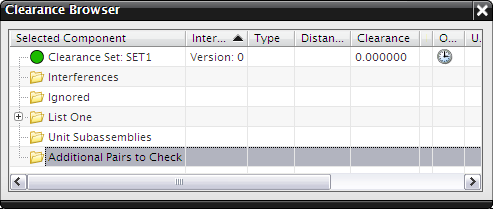
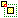

间隙浏览器
间隙浏览器界面让您可以查看分析结果。

间隙浏览器符号：
-
 软干涉
-
硬干涉
-
 接触干涉
接触干涉
间隙数据，以及与该数据相关的重要条件，都显示在间隙浏览器的各种列中。
|
所选的组件 |
显示被分析的对象对中第一个组件的名称以及 ID 的列。 |
|
干涉组件 |
显示被分析的对象对中第二个组件的名称以及 ID 的列。 |
|
类型 |
反映干涉类型的列：：新的/现有的；软、硬、接触。在所选组件旁也会显示干涉类型的图标：软、硬、接触。 |
|
距离 |
列举出被分析组件之间的距离，如果已知的话。 |
|
间隙 |
反映已被指定的任意安全区域。 |
|
标识符 |
用于识别的引用号。 |
|
过时 |
反映与上一次运行的间隙分析比较厚的任何过时情况。 |
|
未加载的对象 |
表明组件是否已被加载。 |
|
文本 |
您想要添加的任何文本。 |
位于何处？
|
菜单 |
分析→装配间隙→间隙浏览器 |